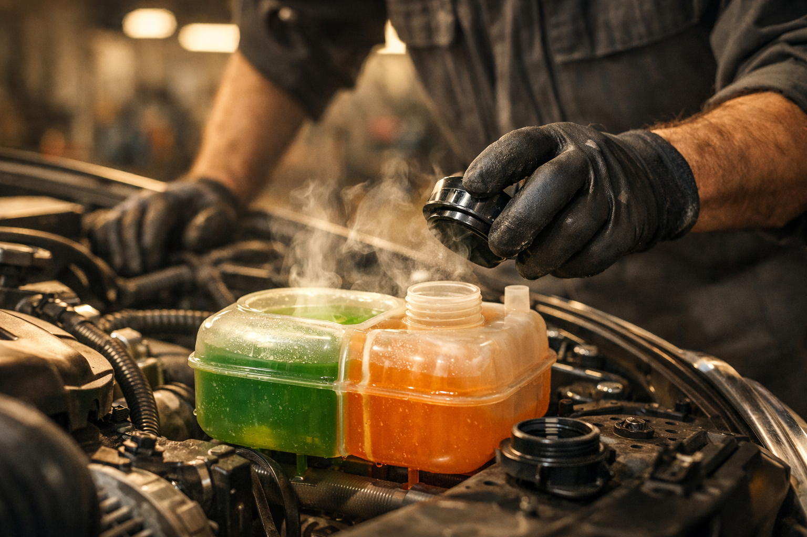
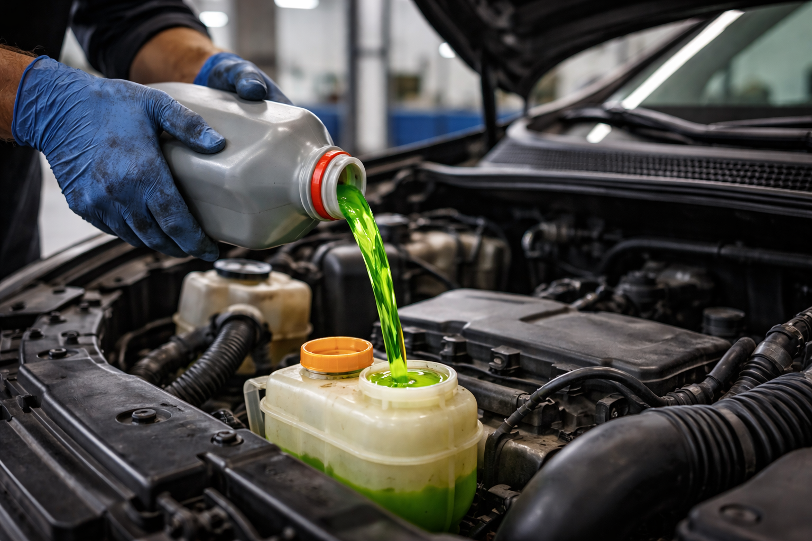

Contrôle et remplacement du liquide de refroidissement et antigel. Protégez votre moteur toute l'année chez Ali-Ka à Etterbeek.

Le liquide de refroidissement circule en permanence dans votre moteur. Il absorbe la chaleur produite par la combustion, la transporte vers le radiateur, puis revient refroidi pour recommencer le cycle. Ce fluide maintient le moteur dans sa plage de fonctionnement idéale, entre 85 et 105 °C. En parallèle, il empêche le gel en hiver et protège les parois internes contre la corrosion. Quand son niveau baisse ou que ses propriétés se dégradent, les ennuis arrivent plus vite qu'on ne le croit.
Un liquide de refroidissement, ça ne dure pas éternellement. Avec le temps, il perd ses additifs anticorrosion. L'eau déminéralisée qui reste ne protège plus grand-chose — ni le moteur, ni le radiateur, ni les durites. De la rouille apparaît. Des dépôts se forment. Les échanges thermiques deviennent moins efficaces. Chez Ali-Ka, Avenue des Casernes 10 à Etterbeek, nous considérons le remplacement du liquide de refroidissement avec la même rigueur qu'une vidange moteur : ce sont deux fluides vitaux dont l'entretien régulier préserve la longévité de votre véhicule.
La fréquence recommandée par les constructeurs se situe entre 2 et 4 ans, selon le type de liquide utilisé et le kilométrage parcouru. Votre carnet d'entretien précise l'intervalle adapté à votre modèle. Cependant, certains signes méritent une attention immédiate, même avant l'échéance prévue.
L'aiguille de température qui grimpe au-delà de la normale est le signal le plus parlant. Une flaque de couleur verte, rose ou orange sous le véhicule après un stationnement prolongé indique une fuite dans le circuit. Une odeur légèrement sucrée dans l'habitacle ou sous le capot provient souvent d'un écoulement de liquide sur des pièces chaudes. Le voyant de température allumé sur le tableau de bord ne doit jamais être ignoré. Chacun de ces indices justifie un contrôle rapide chez Ali-Ka afin d'éviter des dommages coûteux au joint de culasse ou au bloc moteur. Un diagnostic moteur permet alors d'identifier l'origine exacte du problème.
Les hivers bruxellois descendent régulièrement sous zéro. Une concentration insuffisante d'antigel dans le circuit expose le moteur au gel, avec un risque de fissure du bloc ou du radiateur — des réparations particulièrement onéreuses. On ne fait pas ça au pif : chez Ali-Ka, on mesure la concentration de votre antigel au réfractomètre et on ajuste le mélange pour vous protéger jusqu'à -35 °C minimum. Nous inspectons également les durites, le thermostat et la pompe à eau, des composants étroitement liés au bon fonctionnement du circuit de refroidissement.
Les automobilistes d'Etterbeek, d'Ixelles, de Schaerbeek, de Woluwe-Saint-Lambert, de Woluwe-Saint-Pierre et d'Auderghem nous confient l'entretien de leur véhicule depuis plus de 22 ans. Simple appoint de liquide de refroidissement ou purge complète du circuit : notre équipe vous accueille sans rendez-vous, du lundi au vendredi de 9h à 18h et le samedi de 9h à 14h.
Un liquide de refroidissement en bon état contribue aussi à réussir votre contrôle technique sans mauvaise surprise. Le contrôle régulier du liquide de refroidissement fait partie des vérifications recommandées par l'AWSR pour maintenir votre véhicule en parfait état de fonctionnement.
Le remplacement est recommandé tous les 2 à 4 ans, ou selon les préconisations de votre constructeur. Chez Ali-Ka à Etterbeek, nous vérifions le niveau et la qualité du liquide lors de chaque entretien pour vous conseiller le meilleur moment.
Oui, il existe plusieurs types : organique (OAT), inorganique (IAT) et hybride (HOAT). Chaque véhicule nécessite un type précis. Ali-Ka utilise toujours le liquide conforme aux recommandations de votre constructeur pour une protection optimale.
Non, mélanger des liquides de couleurs ou de types différents peut provoquer des dépôts, de la corrosion et une perte d'efficacité. Nous effectuons une purge complète du circuit avant de remplir avec le liquide adapté à votre véhicule.
Arrêtez-vous en toute sécurité et coupez le moteur. N'ouvrez jamais le bouchon du vase d'expansion à chaud. Attendez le refroidissement, puis vérifiez le niveau de liquide. Appelez Ali-Ka au 02 647 47 01 pour un diagnostic rapide. Rouler en surchauffe peut endommager gravement le moteur.
Non, mélanger des liquides de refroidissement de types différents (organique, minéral, hybride) peut provoquer des réactions chimiques néfastes et endommager le circuit. Ali-Ka à Etterbeek utilise toujours le liquide conforme aux spécifications de votre constructeur.